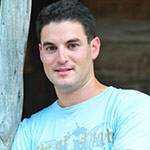

#ArtistServices San Francisco Workshop (2nd Edition)
Since launching in 2011, #ArtistServices has helped to launch 120+ new and encore Sundance films into the digital marketplace and guided 200+ alumni artists with successful Kickstarter projects totaling over $7 Million. Artists whose work has been cultivated through the program include Heidi Ewing & Rachel Grady ("Detropia"), Shane Carruth ("Primer" and "Upstream Color") and Tiffany Shlain ("Connected").
Sundance Institute and San Francisco Film Society invite you to enjoy exclusive access to the second annual #ArtistServices Workshop. Join the conversation with industry experts and thinkers as they discuss the latest technology and trends in Creative Financing, Digital Distribution, Guerilla Marketing and Independent Theatrical Distribution.
SATURDAY JUNE 21, 2014 (9:00 AM to 4:00 PM PST with MIXER TO FOLLOW)
CLICK HERE FOR TICKETS: Only 45 Public Slots Available | $75 each
Sundance Cinemas Kabuki 1881 Post Street, San Francisco, CA 94115 (Park at the two Japantown parking lots. One is at Fillmore and Post, the other is at Post at Webster. Validated parking provides $2 off total. Free secure bicycle parking in both lots. Easy to reach via public transportation. Several MUNI lines serve the theater, including the 3 Jackson, 22 Fillmore and 38 Geary www.sfmuni.com or call 415-673-MUNI).
OPENING SALVO / SUNDANCE INSTITUTE and SAN FRANCISCO FILM SOCIETY
9:00 AM to 9:30 AM PST
Joseph Beyer currently works as Director of Digital Initiatives for Sundance Institute, where he managed the development team and launch of the Sundance Institute #ArtistServices Initiative under the direction of Executive Director Keri Putnam and the Board of Trustees. #ArtistServices provides exclusive creative funding, distribution, marketing and theatrical support to 6,000+ Sundance Institute alumni artists. Filmmakers are eligible for innovative universal and pre-negotiated deals to self-distribute their work to top digital retailers - all while retaining and controlling their creative rights and release plans. Beyer led the team that developed the first-ever collaboration with crowd funding leader Kickstarter.com to provide Institute alumni exclusive training and promotional support in creative funding.
Michele Turnure-Salleo is a producer with over 17 years experience in the United States, Australia, France and Canada. As an independent producer, and later as a staff producer for Banff Center for the Arts, Associate Director of Film Arts Foundation, and in her current position as Director of Filmmaker360 at San Francisco Film Society, she has helped guide hundreds of independent filmmakers and film projects through development, production and distribution. As head of the San Francisco Film Society’s Filmmaker360 department Turnure-Salleo oversees major grants, residencies and project development programs. From 2009 through 2014, the Filmmaker360 grants programs have provided more than 2.5 million dollars in funding to incubate and support innovative and exceptional films. She holds a BFA in Film from the University of New South Wales and a MFA in Film from the University of British Columbia.
FINANCE AND FANS: EVERY KICKSTARTER IS A STORY
9:30 AM to 10:30 AM PST
Liz Cook grew up in Washington, D.C., and received a dual degree at Miami of Ohio for Art History and Journalism. She has worked in France with the U.S. State Department, in India with A.R. Rahman, composer and musician, and in NYC with the digital distributor for film, SnagFilms. She is curently a film community manager at Kickstarter in Brooklyn.
Richard Ray Perez produced and directed the feature documentary film “Cesar’s Last Fast” which premiered in US Competition at the 2014 Sundance Film Festival and took the Audience Award and US Latino Documentary Award at the 2014 San Diego Latino Film Festival. The film is currently in broadcast release thru Univision and Pivot. Currently Mr. Perez is a senior staffer in the Sundance Institute’s Documentary Film Program (DFP) where he oversees a portfolio of creative partnerships and collaborations including “Stories of Change,” a multi-year Sundance DFP initiative with the Skoll Foundation and the Sundance Institute TED Prize Filmmaker Award. Prior to joining the DFP staff Mr. Perez directed and/or executive produced 3 documentary series for Brave New Films and produced and directed the documentary film Unprecedented: The 2000 Presidential Election. Richard Ray Perez is a native of San Fernando, California and holds a bachelor of the arts degree, cum laude, in Visual and Environmental Studies from Harvard College.
STRATEGY TO KNOW: INDIE THEATRICAL AND THE BIG SCREEN
10:30 AM to 11:30 AM PST
In an age where Netflix is the New Theatrical and Theatrical Resembles the Old-Netflix ... what does the savvy producer and director need to know about fitting a smart and diverse theatrical plan into their overall creative distribution strategy. You'll meet every part of the food chain from programmers, to roadshows, to technology to distributors.
 Christine Dávila is the Director of Ambulante California, the recent U.S. expansion of the traveling documentary film festival founded by actors and filmmakers Diego Luna, Gael Garcia Bernal, Pablo Cruz and Elena Fortes. She has been a Programming Associate at the Sundance Film Festival since 2008. Other programming experience includes LA Film Fest, Curacao International Film Festival Rotterdam, San Francisco International Film Festival and San Antonio's CineFestival. She was also the curator for an indie film series in LA’s Downtown Independent Theater. A champion of up and coming Latino talent, Davila tracks filmmakers and the festival scene on her blog chicanafromchicago.com, and is a contributor to Indiewire's LatinoBuzz column. She curates a collection of films on streaming platform, Seed & Spark, under the conversation “Mas American”. Prior to being a film programmer Davila worked in the uninspiring studio and agency world.
Christine Dávila is the Director of Ambulante California, the recent U.S. expansion of the traveling documentary film festival founded by actors and filmmakers Diego Luna, Gael Garcia Bernal, Pablo Cruz and Elena Fortes. She has been a Programming Associate at the Sundance Film Festival since 2008. Other programming experience includes LA Film Fest, Curacao International Film Festival Rotterdam, San Francisco International Film Festival and San Antonio's CineFestival. She was also the curator for an indie film series in LA’s Downtown Independent Theater. A champion of up and coming Latino talent, Davila tracks filmmakers and the festival scene on her blog chicanafromchicago.com, and is a contributor to Indiewire's LatinoBuzz column. She curates a collection of films on streaming platform, Seed & Spark, under the conversation “Mas American”. Prior to being a film programmer Davila worked in the uninspiring studio and agency world.
Nicolas Gonda co-founded Tugg, Inc., a web-platform that enables people to choose the films that play in their local theaters and promote their own events. Launched at the 2012 South by Southwest Festival, Tugg empowers audiences nationwide to screen films from its extensive library of studio and independent titles. Tugg has partnered with mainstream and independent exhibitors, boasting a theatrical footprint of over 75% of movie theaters in the United States. As a producer, Mr. Gonda has worked with Terrence Malick on THE TREE OF LIFE and TO THE WONDER. He has several projects in various stages of production, including producing AJ Edwards directorial debut THE BETTER ANGELS starring Diane Kruger, Jason Clarke and Brit Marling. He is continuing his work with Mr. Malick, producing his two upcoming films, KNIGHT OF CUPS and the currently untitled feature based in the Austin music scene whose combined casts include Christian Bale, Ryan Gosling, Natalie Portman, Cate Blanchett, Michael Fassbender and Rooney Mara. Mr. Gonda was recently named one of Indiewire’s inaugural “Influencers” and Variety’s “10 Producers to Watch” for his work in the independent film industry. He also serves on the Board of the Austin Film Society.
Mike Keegan is the Head Programmer of the Roxie Theater in San Francisco, as well as a Programming Consultant for SF Indie Fest, Doc Fest and Noise Pop, and a co-founder of the First Annual San Francisco Intergalactic Feline Film + Video Festival For Humans. He cut his teeth at the Spectrum 8 in upstate New York, and in high school he went in with some buddies to buy a VHS bootleg of a work print of KIDS IN THE HALL: BRAIN CANDY.
Annie Roney is the founder of ro*co films international, started the documentary film distribution company in 2000 and added ro*co educational in 2009. With a previous distributor she worked on all of the films by Ken Burns as well as Frontline and NOVA. She is based in Sausalito, California. Films in her ro*co catalog include: The Invisible War, How to Survive a Plague, Blood Brother, After Tiller, American Promise, Saving Face, Born Into Brothels, Jesus Camp, Street Fight, The Weather Underground, Promises, and Pray the Devil Back to Hell.
BITTORRENT AND THE ART OF THE BUNDLE
11:30 AM to 12:00 PM PST
BitTorrent has over 170,000,000 users worldwide. 10-15% of those users will travel from a BitTorrent Content Bundle and go on to visit the fan or store site for a film. Drafthouse Films' Oscar-Nominated Documentary "The Act of Killing" created chatter when they used BitTorrent Bundles to circument the Phillipine censorship and deliver the film for free across the Internet. 3.5 million visits sent 45,000 visits to the iTunes Movies Store where the film was available to buy or rent. Let's talk about that.
 Matt Mason currently serves as Chief Content Officer at BitTorrent, a creator of advanced, innovative technologies designed to efficiently deliver large files across the Internet. BitTorrent currently boasts over 170 million active monthly users. As CCO Mason oversees BitTorrent Bundles, a new publishing system that takes advantage of BitTorrent technology. To date over 10,000 content creators and rights holders to sign up to work with BitTorrent, including Linkin Park, Madonna, Kaskade, Moby, De La Soul and the Oscar nominated documentary The Act of Killing. Fans downloaded over 100 million Bundles since their launch in the spring of 2013. Mason is also the bestselling author of The Pirate’s Dilemma, the first book in the history of the world to hit the number one spot on Amazon’s economics/free enterprise bestseller list and the rap bestseller list at the same time. It has since been published in ten countries and counting. He is also a board member at PopTech, a global community of innovators, working together to expand the edge of change.
Matt Mason currently serves as Chief Content Officer at BitTorrent, a creator of advanced, innovative technologies designed to efficiently deliver large files across the Internet. BitTorrent currently boasts over 170 million active monthly users. As CCO Mason oversees BitTorrent Bundles, a new publishing system that takes advantage of BitTorrent technology. To date over 10,000 content creators and rights holders to sign up to work with BitTorrent, including Linkin Park, Madonna, Kaskade, Moby, De La Soul and the Oscar nominated documentary The Act of Killing. Fans downloaded over 100 million Bundles since their launch in the spring of 2013. Mason is also the bestselling author of The Pirate’s Dilemma, the first book in the history of the world to hit the number one spot on Amazon’s economics/free enterprise bestseller list and the rap bestseller list at the same time. It has since been published in ten countries and counting. He is also a board member at PopTech, a global community of innovators, working together to expand the edge of change.
LUNCH / MINGLE / STRETCH
12:00 PM to 1:00 PM PST
DIRECT TO FANS: EYEBALLS AND INTERDEPENDENCE
1:15 PM to 2:15 PM PST
We don't really ever know WHAT exactly we'll cover when so many talented folks get to talkin' but we promise it will be practical straight talk on how to distribute and make money with independent films. And we'll throw in some bonus content on what technology tells us about the future of that relationship between artists and audiences. Sit back, put the notepads down and just listen to the producorial gospel.
 Jamie Wilkinson is co-founder and CEO of VHX, a digital distribution platform for film, TV and other premium video content. He is the co-creator of Know Your Meme, taught the Internet Famous Class, won a Primetime Emmy for his work on Star Wars Uncut, and regularly speaks on the subjects of Internet culture and creative production. His work has been featured on NBC, TIME, CNN, NPR, the New York Times and the frontpage of YouTube.
Jamie Wilkinson is co-founder and CEO of VHX, a digital distribution platform for film, TV and other premium video content. He is the co-creator of Know Your Meme, taught the Internet Famous Class, won a Primetime Emmy for his work on Star Wars Uncut, and regularly speaks on the subjects of Internet culture and creative production. His work has been featured on NBC, TIME, CNN, NPR, the New York Times and the frontpage of YouTube.
Honored by Newsweek as one of the “Women Shaping the 21st Century” and on NPR’s list of “best commencement speeches, ever,”Tiffany Shlain is a filmmaker, speaker, and founder of The Webby Awards, whose work explores navigating our connected world and thoughts on how to shape our future. Her films and work have received over 60 awards and distinctions and she has had four films premiere at Sundance including her feature documentary Connected. The US State Department has selected three of her films for The American Film Showcase where they send her to embassies around the world to represent America. Her critically acclaimed hit series on AOL, The Future Starts Here, received over 20 million views and was just renewed for a second season launching fall 2014. In her other film series “Let It Ripple: Mobile Films for Global Change,” Tiffany employs a new way of making films she calls "Cloud Filmmaking," where she makes films collaboratively with people all over the world and then offers them for free with custom endings to nonprofits and schools around the world to help further their mission. Their cloud film “The Science of Character” premiered globally in March at over 1500 sites including schools, organizations and embassies. tiffanyshlain.com
Jason Michael Berman has produced numerous feature films that premiered at the world's most prestigious films festivals, including Sundance, Toronto, Berlinale, Tribeca and Edinburgh. He has produced nine independently financed films in the last three years alone, earning him coveted spots on the "Producers to Watch" lists compiled by Variety in 2011 and Deadline Hollywood in 2012. His credits include "Little Accidents" "LUV" "Jess + Moss" "The Dry Land" and "x/y"
CREATIVE DISTRO KEYNOTE: RON NAJOR from “SHORT TERM 12”
2:15 PM to 2:45 PM PST
Producer and Patriot of the Indie Arts Ron Najor is so thoughtful and smart and sought-after, he stopped answering our #ArtistService calls. We tricked him a few weeks ago with our 435 caller ID and with passion we told him we thought directors and producers right now were really, really hungry for some down and dirty practical advice about what is #awesome and what is #epicfail about the challenges of getting an indie film out and into the world. Ron paused a while, taking it in, thinking of his own experiences and finally answered, "You guys mean sort of like a keynote huh? What I Learned, What I Would Do Differently? That type of thing?"
Yes, Ron - a keynote. Conceived, Strategized and Deployed - completely by you.
Ron graduated from San Diego State University with a master’s degree in Television, Film, and New Media. While there, he was selected three times to receive National Student Emmy Awards. Ron’s first produced independent feature film "I Am Not A Hipster" was an official selection of the Sundance Film Festival in 2012. "Short Term 12," which won both the Grand Jury Prize and the Audience Award at SXSW in 2013, marks his second collaboration with writer/director Destin Daniel Cretton.
*** SPECIAL GUEST TO BE ANNOUNCED ***
2:45 PM to 3:15 PM PST
TAKEAWAYS
3:15 PM to 3:30 PM PST
When our workshop is all said and done, and the notebooks are filled with data and the minds race with new ideas and deeper questions – Sundance staffer Missy Laney will lead this cool-down refresher of the day’s highlights and takeaways that stood out most dramatically.
 Missy Laney has guided over 150 artists through successful Kickstarter campaigns totaling $8 million dollars since joining Sundance Institute in 2012, including Sean and Andrea Fine’s Oscar Award Winner “Innocente,” Jehane Noujaim’s “The Square” and Pamela Green’s “Be Natural: The untold story of Alice Guy Blache” which raised over $200K. She began her career at Sundance in the esteemed Feature Film Program and was later recruited to join the Institute’s #ArtistServices, a creative distribution initiative working with iTunes, Netflix, Hulu, Amazon and other partners. As digital distribution manager for #ArtistServices, Laney works with filmmakers leading up to their digital premieres and specializes in organizing their marketing efforts to maximize success including titles such as "Upstream Color" and "BURN".
Missy Laney has guided over 150 artists through successful Kickstarter campaigns totaling $8 million dollars since joining Sundance Institute in 2012, including Sean and Andrea Fine’s Oscar Award Winner “Innocente,” Jehane Noujaim’s “The Square” and Pamela Green’s “Be Natural: The untold story of Alice Guy Blache” which raised over $200K. She began her career at Sundance in the esteemed Feature Film Program and was later recruited to join the Institute’s #ArtistServices, a creative distribution initiative working with iTunes, Netflix, Hulu, Amazon and other partners. As digital distribution manager for #ArtistServices, Laney works with filmmakers leading up to their digital premieres and specializes in organizing their marketing efforts to maximize success including titles such as "Upstream Color" and "BURN".
RECEPTION TO FOLLOW AT SAN FRANCISCO FILM SOCIETY'S FILMHOUSE
4:00 PM to 6:00 PM PST
** IF OUR WORKSHOP IS SOLD OUT, DON'T GIVE UP! JOIN THE WAITLIST **